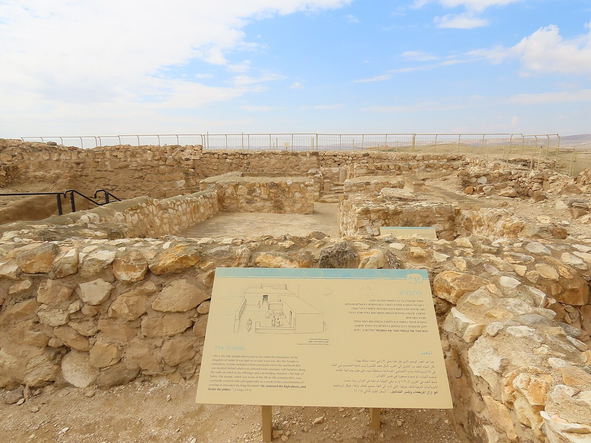

Arad Temple

- Find Name
- Arad Temple
- Historical Period
- Iron Age II
- Artifact Date
- 9th–8th century BC
- Date Discovered
- 1962–1967
- Discovery Location
- Tel Arad, Negev, Israel
- Current Location
- In situ, Tel Arad National Park
- Timeline Era
- Divided Monarchy
- Description
- A complete Judahite temple inside the fortress at Arad, found by Yohanan Aharoni: an outer court, a main hall, and a holy of holies with a stone altar, two incense altars, and a standing stone. It was deliberately dismantled and buried — its altars laid on their sides and covered with earth — most likely during the reforms of Hezekiah or Josiah.
- Biblical Significance
- Here is the reform in action: a working temple outside Jerusalem, carefully closed down rather than smashed, when Judah's kings decided worship belonged in one place. The buried altars are the physical footprint of 2 Kings 18 and 23 — kings who took God's law seriously enough to shut a temple down.
- Evidence Class
- Contextual
- Interpretations
- Scholars agree the temple is a genuine Judahite sanctuary deliberately dismantled; debate concerns when — Hezekiah’s reform or Josiah’s — and whether the burial was reverent or punitive.
- Scripture Illuminated
- Related Books
- Related Events
Awaiting Review Not yet checked against scholarly sources. Treat its claims as provisional until this entry is reviewed. About verification
Last reviewed: not yet reviewed